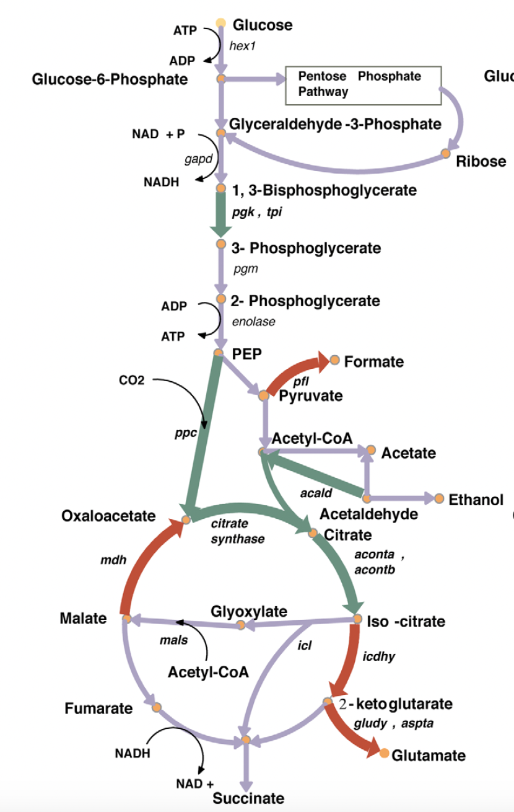

An Engineering Approach to a Biology Problem
My path into computational biology didn't start in a biology department. I came to Prof. Costas D. Maranas's lab at Penn State by way of an M.S. in Industrial Engineering and Operations Research, which turned out to be exactly the right background for the question the lab cared about: metabolism is, among other things, a giant constrained optimization problem, and a graduate student who thinks in flux balances and linear programs can contribute to it without ever having run a Western blot. The Maranas group builds computational frameworks — grounded in systems engineering and mathematical optimization — to understand, analyze, and redesign metabolism and proteins: metabolic network reconstruction, computational strain design, synthetic biology, and enzyme and protein engineering, among other threads. My corner of that agenda was strain design: given a microbe and a biochemical you'd like it to produce in commercially useful quantities, which genes do you actually need to change?
That question matters more than it might sound. Metabolic engineering before computational strain-design tools tended to proceed by informed intuition — a researcher's mental model of a pathway, followed by trial-and-error genetic modifications. That works, slowly, for well-studied pathways. It works much less well when the profitable intervention is a gene several reactions away from the pathway you're staring at, with no obvious biochemical reason to suspect it — exactly the kind of non-obvious, systems-level effect that a hand-drawn pathway diagram will never surface, but that a genome-scale computational model can.
The Scientific Approach: What Should Change, and What Shouldn't
OptForce, the framework I developed with my advisor Costas Maranas and labmate Patrick Suthers and published in PLoS Computational Biology in 2010, starts from a deceptively simple observation: if you have flux measurements from both a wild-type strain and a strain that's already known to overproduce your target biochemical (even a poorly-optimized one), the difference between those two flux distributions contains information about which reactions matter. Rather than trying to redesign metabolism from first principles, OptForce mathematically contrasts the two flux states across a genome-scale metabolic network model and identifies which reaction fluxes are structurally required to increase, which must decrease or be eliminated, and which can be left alone entirely.
The output isn't a single answer — metabolic networks are redundant enough that multiple intervention sets can achieve a similar production outcome. So the method groups the required flux changes hierarchically and extracts a minimal, actionable set of genetic modifications: the smallest, most defensible list of interventions that a strain engineer could actually go implement, rather than an exhaustive and overwhelming catalogue of every reaction that flux analysis says is "involved."
"The goal was never to tell an engineer everything that's mathematically true about the network. It was to tell them the smallest thing they'd actually need to change."
Building the Computational Framework
Underneath that description is a substantial computational pipeline, built layer by layer:
- Genome-scale network reconstruction. Before any optimization could run, the target organism's metabolism had to be represented as a genome-scale stoichiometric model — every relevant reaction, its stoichiometry, and its gene associations, assembled and curated from the organism's genomic, transcriptomic, and metabolomic data.
- Flux variability analysis across two strain states. The core computational step compares the feasible flux ranges of the reference (wild-type) network against the feasible flux ranges of a network constrained to match observed or desired overproduction behavior, reaction by reaction across the entire model — not just along the pathway a human would have guessed mattered.
- Combinatorial reduction to a minimal set. Identifying which fluxes must change is only half the problem; the harder computational step is reducing that list to a minimal combination of genetic interventions that's jointly sufficient, since flux requirements interact with each other and a naive union of individually-necessary changes is usually far larger than what's actually needed.
- Validation against a real, well-studied system. We applied the framework to succinate overproduction in Escherichia coli, a system with enough independent experimental literature to sanity-check the method's outputs. OptForce recovered engineering strategies that matched known, intuitive interventions — a necessary credibility check — but also surfaced coordinated changes in reactions distant from the core succinate pathway that weren't part of the conventional wisdom, which is exactly the kind of result that justifies building a genome-scale computational tool instead of trusting intuition alone.
From Succinate to Butanol to Fragrance Chemicals
A methods paper is only as good as what people build with it afterward, and OptForce turned out to generalize well beyond its original succinate demonstration. In follow-on work, I used the same framework to identify non-native production routes and engineering interventions for microbial 1-butanol production, and to customize interventions for overproducing a range of fatty acids (C6 through C16) in E. coli — different target molecules, different intervention sets, same underlying optimization machinery. Collaborating with Mattheos Koffas's group, the framework was also adapted to identify genome-scale interventions that cooperatively force carbon flux toward malonyl-CoA, a precursor relevant to flavanone and other polyketide biosynthesis — showing that the method held up even when the target wasn't a simple linear pathway endpoint but a shared metabolic hub feeding several downstream products.
The broader validation, though, is industrial: computational strain-design frameworks in this lineage have been used by biotech companies engineering production strains for real manufacturing processes — including Genomatica's work engineering recombinant E. coli to produce 1,4-butanediol (BDO) at commercial scale. That's the outcome that actually matters for a method like this: not a citation count, but production strains running in a bioreactor somewhere, designed in part by an algorithm rather than pure intuition.
A Framework That Outlived the Thesis
Looking back, OptForce was my introduction to a habit of mind that's shown up in every project since, in genomics and diagnostics as much as in metabolic engineering: when you're facing a combinatorially large space of possible interventions, the goal isn't to enumerate everything that's technically true about the system — it's to mathematically narrow that space down to the smallest, most actionable set someone could actually go implement. Metabolic flux networks, CRISPR guide RNA libraries, sequencing depletion panels — the objects are different, but the underlying discipline of turning "everything that could matter" into "here's what to actually do" is the same one I learned first in a systems-engineering framework applied to E. coli metabolism, a decade before I applied it to a virus.